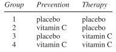
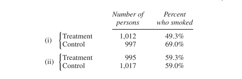
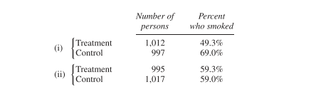
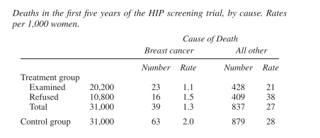

Chapter 2 Observational Studies
2.1 Chapter Notes
Observational studies can be powerful, and in many cases are the only kind of study we’re going to get (the chapter uses the example of the health effects of smoking). However we need to be careful about confounding: is the treatment group really similar to the control group in all the ways that matter? For example, smokers are more likely to be men, and men experience heavier mortality than women of the same age. Age could be another confound, since older people have different smoking habits.
A case study is introduced of the Coronary Drug Project which featured a randomised controlled double blind study of clofibrate which reduces blood cholesterol. The study shows that the drug did not save lives over 5 years. It was hypothesized that this might have been because people weren’t taking their medicine. The high adherence group did have lower mortality than the control group. However, there may be a confound here - the scientists did not randomly assign people to be high or low adherence. The investigators therefore compared high adherence subjects in the treatment group to high adherence subjects in the control group, and similarly for low adherence. The conclusions were that
- clofibrate does not reduce mortality
- adherers experience lower mortality than non-adherers, whether they were taking a treatment or a placebo
Some more examples:
Pellagra - disease first noticed in Europe in the eighteenth century, associated with poverty and unsanitary conditions. There were reports of flies in pellagra afflicted homes. One blood-sucking fly shared a similar geographic distribution to pellagra. Many assumed it to be spread by insect, like malaria, yellow fever, or typhus. In 1914, American epidemiologist Jospeh Goldberger showed that it was caused by a diet deficient in what we now call niacin. The disease was associated with poverty because there isn’t much niacin in corn, which made up the bulk of the diet of poor people in the affected areas.
In the 1950s, some researchers came to the conclusion that male circumsion is preventative of cervical cancer. This is because of lower rates of cervical cancer among Jewish and Muslim women. Later it was discovered that certain strains of HPV can cause cervical cancer, and HPV is spread by sexual contact. The likely cause of the discrepancy in cervical cancers was the different sexual behaviours over the 1930s and 40s of the populations observed.
Animal studies suggest that ultrasound may produce adverse effects in the neurological, immunological, hematological, developmental and genetic status of the exposed fetus. For a while researchers were concerned that this could be extrapolated to humans, and an association with ultrasounds and low birth weight was observed. However a randomised controlled experiment found that if anything ultrasound was protective. Ultrasounds and low birth weight had a common cause - problem pregnancies.
A careful observational study found an association between the expansion of Samaritans and a decline in the suicide rate in England between 1964-1970. However after this paper the suicide rate remained constant over the 70s, while Samaritans continued to expand. The decline is better explained by a shift from coal gas to natural gas in heating and cooking. Natural gas is much less toxic. About one third of suicides in the early 60s were by gas and by the end of the decade there were practically no such cases.
The same Berkeley graduate admissions gender bias case study I first read in Statistical Rethinking. I belive it may also be in the Book of Why. In both these last cases as an example of Simpson’s paradox.
Fisher thought that the association between smoking and lung cancer could be explained by confounding. It could not.
2.2 Exercise Sets
Set A
In the U.S. in 2000, there were 2.4 million deaths from all causes, compared to 1.9 million in 1970 — a 25% increase. True or false, and explain: the data show that the public’s health got worse over the period 1970–2000.
We cannot draw the conclusion that the public’s health got worse over the period from this data alone. The increase in deaths could be explained for example by an increase in population, or from the population ageing overall.
Data from the Salk vaccine field trial suggest that in 1954, the school districts in the NFIP trial and in the randomized controlled experiment had similar exposures to the polio virus.
The data also show that children in the two vaccine groups (for the randomized controlled experiment and the NFIP design) came from families with similar incomes and educational backgrounds. Which two numbers in table 1 (p. 6) confirm this finding?
The data show that children in the two no-consent groups had similar family backgrounds. Which pair of numbers in the table confirm this finding?
The data show that children in the two control groups had different family backgrounds. Which pair of numbers in the table confirm this finding?
In the NFIP study, neither the control group nor the no-consent group got the vaccine. Yet the no-consent group had a lower rate of polio. Why?
To show that the vaccine works, someone wants to compare the 44/100,000 in the NFIP study with the 25/100,000 in the vaccine group. What’s wrong with this idea?
We saw in the chapter how much difference family background can have on incidence of polio. The fact that the rate of polio cases per 100,000 is very similar in the treatment group for both trials (28 vs 25) suggests that family backgrounds were also similar.
Similarly, the rate among the two non-consent groups are also similar (46 vs 44).
However the rates of the two control groups are very different (71 vs 54). Since these two groups did not differ in treatment, the differing rates of polio must have some other cause, like family background.
In the NFIP study, the control group contains both children whose parents would have consented for them to get the vaccine, and children whose parents would not have consented. The no consent group only contains the latter. Consent for vaccination is associated with higher socio-economic group and which is in turn associated with higher incidence of polio, for reasons explained in the chapter.
The two groups are not similar in all aspects aside from treatment status. The no consent group is likely to be on average from a more disadvantaged socio-economic group, which is associated with lower incience of polio. Comparing these two figures will likely understate the impact of the vaccine.
Polio is an infectious disease; for example, it seemed to spread when children went swimming together. The NFIP study was not done blind: could that bias the results? Discuss briefly.
That the study was not done blind means that the children (or their parents) knew whether they had been given the treatment or been placed into the control group. Parents whose children were placed into the control group may have been more cautious about interaction with other children, knowing that they were not protected against polio. This would have lowered the incidence of polio among the control group, making the vaccine seem less effective.
The Salk vaccine field trials were conducted only in certain experimental areas (school districts), selected by the Public Health Service in consultation with local officials. In these areas, there were about 3 million children in grades 1, 2, or 3; and there were about 11 million children in those grades in the United States. In the experimental areas, the incidence of polio was about 25% higher than in the rest of the country. Did the Salk vaccine field trials cause children to get polio instead of preventing it? Answer yes or no, and explain briefly.
It seems more likely that school districts with a higher incidence of polio (or which were thought to be at higher risk of polio) were chosen for participation in the trials. With what the chapter tells us about the association between class and incidence of polio, it’s possible we would see this pattern if local officials put forward wealthier areas for the trials more often.
Linus Pauling thought that vitamin C prevents colds, and cures them too. Thomas Chalmers and associates did a randomized controlled double-blind experiment to find out. The subjects were 311 volunteers at the National Institutes of Health. These subjects were assigned at random to 1 of 4 groups:

All subjects were given six capsules a day for prevention, and an additional six capsules a day for therapy if they came down with a cold. However, in group 1 both sets of capsules just contained the placebo (lactose). In group 2, the prevention capsules had vitamin C while the therapy capsules were filled with the placebo. Group 3 was the reverse. In group 4, all the capsules were filled with vitamin C.
There was quite a high dropout rate during the trial. And this rate was significantly higher in the first 3 groups than in the 4th. The investigators noticed this, and found the reason. As it turned out, many of the subjects broke the blind. (That is quite easy to do; you just open a capsule and taste the contents; vitamin C — ascorbic acid — is sour, lactose is not.) Subjects who were getting the placebo were more likely to drop out.
The investigators analyzed the data for the subjects who remained blinded, and vitamin C had no effect. Among those who broke the blind, groups 2 and 4 had the fewest colds; groups 3 and 4 had the shortest colds. How do you interpret these results?
One possible interpretation is that Vitamin C treatment has a pronounced placebo effect. Among those who remained blinded, no effect was found. However for those who broke the blind i.e. knew whether they were getting the treatment or the control, vitamin C has effective at both treating and preventing colds. For non-adherers, the study effectively became non-blinded and so could not rule out a placebo effect.
Another possible interpretation, that seems quite a bit less likely, is that adherers and non-adherers differ in some way that is relevant to the effect of vitamin C. E.g. some other factor influences both adherence rate and effectiveness of vitamin C treatment in such a way as to produce the pattern observed. This is implausible but we can come up with hypotheticals e.g. if being wealthy is associated with adherence for some reason, and wealthy people already have sufficient vitamin C intake from their diets so that supplementation has little effect, we might see the pattern observed.
(Hypothetical.) One of the other drugs in the Coronary Drug Project (section 2) was nicotinic acid. Suppose the results on nicotinic acid were as reported below. Something looks wrong. What, and why?

A much higher proportion of treatment group are non-adherers than the control group. This suggests that whether a subject was assigned treatment or control influenced their decision to adher or not, which must mean that the blind was broken for many of these subjects. To tease out a possible placebo effect, it may be necessary to ask follow up questions to determine which subjects remained blinded.
(Hypothetical.) In a clinical trial, data collection usually starts at “baseline,” when the subjects are recruited into the trial but before they are assigned to treatment or control. Data collection continues until the end of followup. Two clinical trials on prevention of heart attacks report baseline data on smoking, shown below. In one of these trials, the randomization did not work. Which one, and why?

In i) the treatment group has significantly fewer smokers. Since smokers are likely to be on average less healthy than non-smokers, this randomisation failure may overestimate the benefit of the treatment being studied.
Some studies find an association between liver cancer and smoking. However, alcohol consumption is a confounding variable. This means —
- Alcohol causes liver cancer.
- Drinking is associated with smoking, and alcohol causes liver cancer.
Choose one option, and explain briefly.
If drinking is associated with smoking, and alcohol causes liver cancer, then there would be an observed association between smoking and liver cancer, even if smoking has no causal influence on liver cancer rates. Alcohol consumption is a confound.
Breast cancer is one of the most common malignancies among women in the U.S. If it is detected early enough—before the cancer spreads—chances of successful treatment are much better. Do screening programs speed up detection by enough to matter?
The first large-scale trial was run by the Health Insurance Plan of Greater New York, starting in 1963. The subjects (all members of the plan) were 62,000 women age 40 to 64. These women were divided at random into two equal groups. In the treatment group, women were encouraged to come in for annual screening, including examination by a doctor and X-rays. About 20,200 women in the treatment group did come in for the screening; but 10,800 refused. The control group was offered usual health care. All the women were followed for many years. Results for the first 5 years are shown in the table below. (“HIP” is the usual abbreviation for the Health Insurance Plan.)

Epidemiologists who worked on the study found that (i) screening had little impact on diseases other than breast cancer; (ii) poorer women were less likely to accept screening than richer ones; and (iii) most diseases fall more heavily on the poor than the rich.
Does screening save lives? Which numbers in the table prove your point?
Why is the death rate from all other causes in the whole treatment group (“examined” and “refused” combined) about the same as the rate in the control group?
Breast cancer (like polio, but unlike most other diseases) affects the rich more than the poor. Which numbers in the table confirm this association between breast cancer and income?
The death rate (from all causes) among women who accepted screening is about half the death rate among women who refused. Did screening cut the death rate in half? If not, what explains the difference in death rates?
The strongest indication to me in this data that screening does save lives is comparing the breast cancer death rate in the control group to the same rate in the treatment group overall - i.e. not just among those examined. Since the treatment and control were assigned randomly, we would expect the two groups to have similar traits in all important respects except that roughly two thirds of the treatment group were screened and none of the control group were. If we were just comparing the breast cancer death rate of the examined group to the control group we might posit that there is some other factor that influences both likeliness of accepting treatment and chance of dying of breast cancer (we could hypothesise various lifestyle factors here). We are told later that if anything the selection effect works the other way, but comparing the overall treatment group to the control group avoids this possible confound.
The death rate from all other causes is the same in the overall treatment group as in the overall control group because the groups were assigned randomly and the only treatment difference between the two groups was breast cancer screening. We could imagine that breast cancer screening could increase the all other causes death rate (e.g. if breast cancer were associated with other severe disease and so catching breast cancer early and treating it simply “unmasked” this other cause of death) but this appears to not be the case.
We are told that “poorer women were less likely to accept screening than richer ones.” We would therefore expect that the refused treatment group is on average poorer than the control group. The refused treatment group has a lower breast cancer death rate than the control group, even though neither were screened for breast cancer. This suggests a negative correlation between wealth and risk of dying of breast cancer.
We should not infer a causal relationship between screening and lower all cause mortality. It is possible that some other factor influences accepting screening and all cause mortality. In this case wealth seems like a good candidate since we are told that wealthier women are both more likely to accept screening and have a lower all cause mortality rate.
(This continues exercise 9.)
To show that screening reduces the risk from breast cancer, someone wants to compare 1.1 and 1.5. Is this a good comparison? Is it biased against screening? For screening?
Someone claims that encouraging women to come in for breast cancer screening increases their health consciousness, so these women take better care of themselves and live longer for that reason. Is the table consistent or inconsistent with the claim?
In the first year of the HIP trial, 67 breast cancers were detected in the “examined” group, 12 in the “refused” group, and 58 in the control group. True or false, and explain briefly: screening causes breast cancer.
This is not a good comparison, as the accepted treatment group and refused treatment group differ in important aspects other than whether they were screened for breast cancer. For example, the accepted treatment group is on average wealthier. Since wealth is positively associated with risk of breast cancer, this comparison is biased against screening.
This table is inconsistent with that claim. If simply encouraging people to come in for screening positively impacted mortality rate then we would expect to see the (combined) treatment group have lower all cause mortality. In fact rates are about the same.
In this data we see that there is a positive association between screening and risk of breast cancer diagnosis. About 0.33% of those screened were found to have breast cancer, compared to 0.11% of those who refused treatment and 0.19% of those in the control group. However we cannot infer that screening causes breast cancer. We would expect to see this pattern if screening makes it more likely that breast cancer is detected when present. Since this is the point of screening, this is the most parsimonious explanation.
Cervical cancer is more common among women who have been exposed to the herpes virus, according to many observational studies.15 Is it fair to conclude that the virus causes cervical cancer?
We cannot infer from this data alone that the herpes virus causes cervical cancer. There could be some other factor that influences both rates of herpes and cervical cancer. In this case we know that HPV causes cervical cancer, and that both HPV and herpes virus are sexually transmitted, so it seems likely that the positive association is caused by rate of sexual activity.
Physical exercise is considered to increase the risk of spontaneous abortion. Furthermore, women who have had a spontaneous abortion are more likely to have another. One observational study finds that women who exercise regularly have fewer spontaneous abortions than other women. Can you explain the findings of this study?
For this one I’m not sure I understand what the question is driving at. In particular it feels like my answer should use the information that “women who have had a spontaneous abortion are more likely to have another.” However the only explanation I can think of right now is that there are other factors that are positively associated with spontaneous abortion but negatively associated with regular exercise, and that this factor is sufficient to outweigh the causative impact of exercise on spontaneous abortion. We could posit a wide variety of lifestyle factors here.
Let me look up the answer for this one:
If a woman has already aborted in a previous pregnancy—and is therefore more at risk in her current pregnancy—a physician is likely to tell her to cut down on exercise. In this instance, exercise is a marker of good health, not a cause.
Makes sense.
A hypothetical university has two departments, A and B. There are 2,000 male applicants, of whom half apply to each department. There are 1,100 female applicants: 100 apply to department A and 1,000 to department B. Department A admits 60% of the men who apply and 60% of the women. Department B admits 30% of the men who apply and 30% of the women. “For each department, the percentage of men admitted equals the percentage of women admitted; this must be so for both departments together.” True or false, and explain briefly.
This is Simpson’s paradox, and it’s the example from the chapter about Berkeley’s graduate admissions. In this case the overall acceptance rate for women is 33% and for men it is 45%.
I’m going to skip 14 and 15 since they are pretty straightforward maths questions.
2.3 Review Exercises
I’m going to skip these for now and circle back later. Revisit.